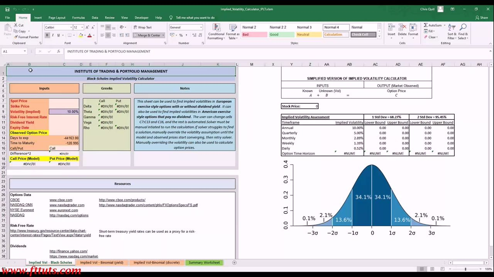
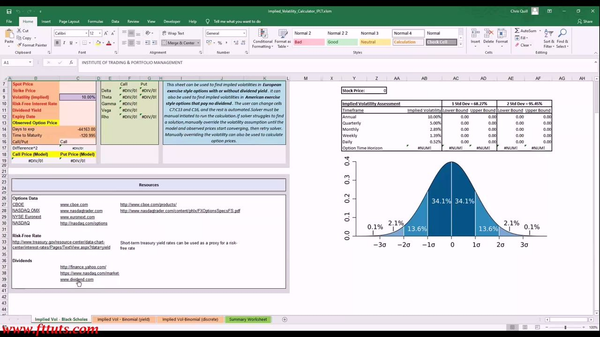
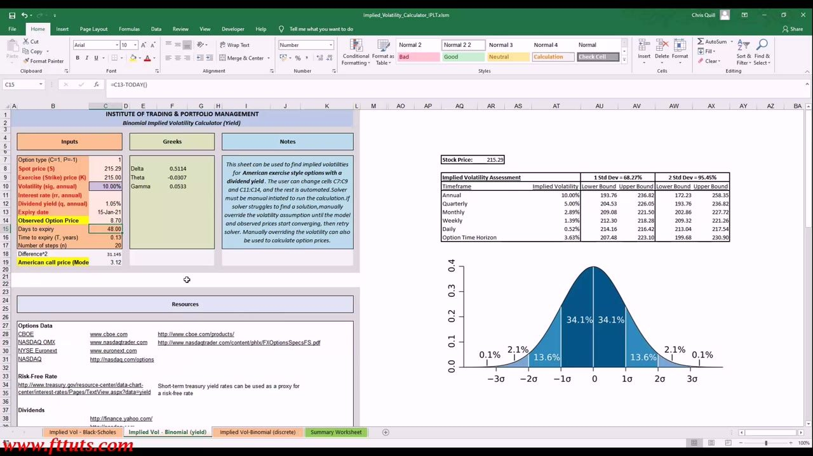
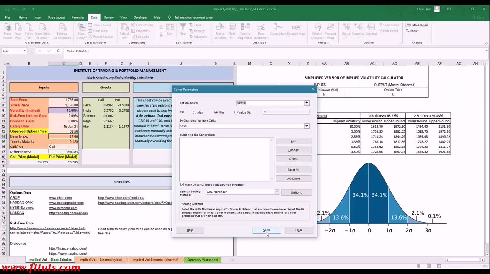
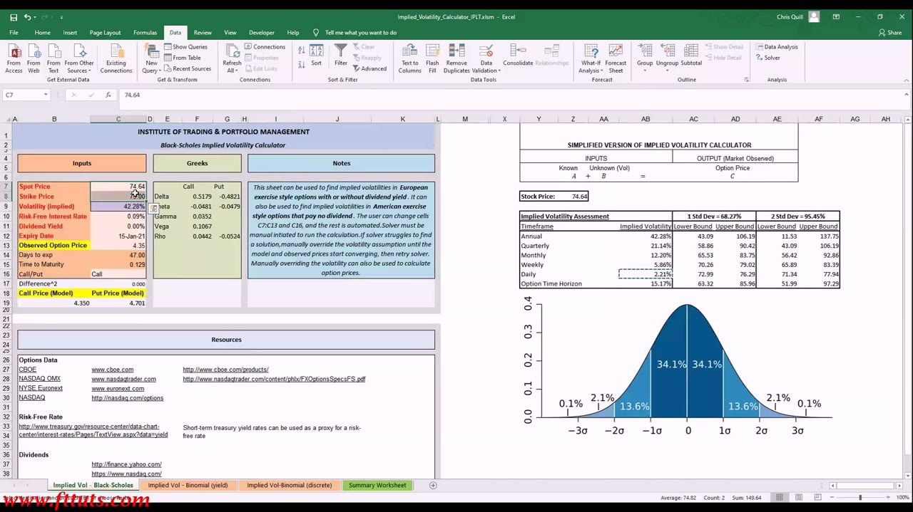
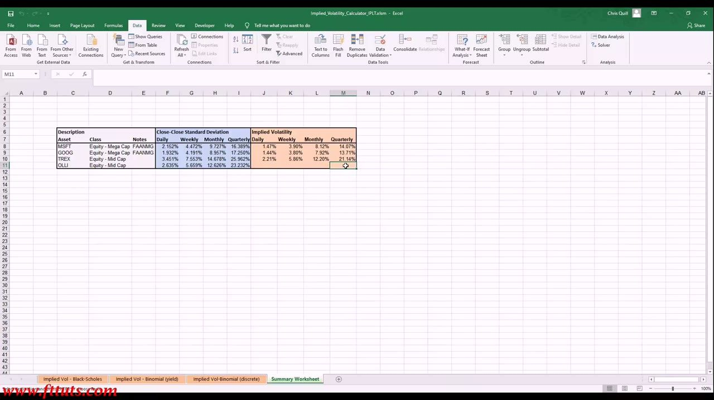

Implied Volatility 2
Solving for an option's implied volatility yourself — from public data — with Black-Scholes / Binomial models and Excel Solver.
Implied volatility is the volatility input that makes an option-pricing model's price equal the market-observed option price — gather the inputs from public sources and let Solver back it out.
The gist
- Implied volatility = the volatility input that makes an option-pricing model's price equal the market-observed option price. You solve for it — no third party needed.
- Inputs come from public sources: Spot + observed option price + chain (CBOE delayed quotes, manual entry only); Strike, Expiry, Call/Put; risk-free rate ≈ maturity-matched short-term US Treasury yield (treasury.gov); dividend yield (nasdaq/yahoo/dividend.com).
- Pick the model tab by option style: Black-Scholes (European, or American paying no dividend), Binomial-Yield (American with a dividend yield), Binomial-discrete (discrete dividends).
- Excel Solver does the work: Set Objective = Difference^2 (model − observed, squared) → To: Min → By Changing = the Volatility cell (GRG Nonlinear). The volatility it lands on IS the annualized implied volatility.
- Scale annual IV to any horizon by the √time rule (Quarterly ×√(1/4), Monthly ×√(1/12), Weekly ×√(1/52), Daily ×√(1/252)) to read expected % move and 1σ (68.27%) / 2σ (95.45%) price bounds.
- Two conclusions from the worked examples: implied vol scales UP the market-cap chain (mega-caps MSFT 28.14% / GOOG ~27% vs mid-cap TREX 42.28% annual), and implied ≈ realized C-C std dev here (slightly below), cross-validating the two independent methods.
The IV Calculator workbook & the method
- The IPLT 'Simplified Implied Volatility Calculator' (Chris Quill) — a workbook with 4 tabs / 3 pricing models: Implied Vol - Black-Scholes, Implied Vol - Binomial (yield), Implied Vol - Binomial (discrete), and a Summary Worksheet.
- Inputs (left): Spot Price, Strike Price, Volatility (implied, starts at 10.00%), Risk-Free Rate, Dividend Yield, Expiry Date, Observed Option Price, Days-to-exp, Time-to-Maturity, Call/Put. Outputs: Difference^2 and Call/Put Price (Model). Greeks (Delta, Theta, Gamma, Vega, Rho) sit in the middle.
- The core idea: Known inputs (A) + Unknown Vol (B) ⇒ Option Price (C, market-observed). You solve for the volatility (B) that makes the model price equal the observed price — THAT is the implied volatility.
- Solver must be run manually. If it struggles, manually override the volatility until model and observed prices converge, then retry Solver. Overriding volatility manually can also just price the option.
The whole lesson is one skill: back out the implied vol yourself from publicly available data, so you can head-check any IV number and never depend on a third party.

Sourcing the inputs (CBOE, Treasury, dividends)
- Options data (chain, observed price, market IV): CBOE (cboe.com/products), NASDAQ OMX (nasdaqtrader.com), NYSE Euronext (euronext.com), NASDAQ (nasdaq.com/options). Use CBOE Delayed Quotes — the site prohibits auto-extraction/scraping, so enter the ticker manually.
- Risk-free rate: US Treasury (treasury.gov Daily Treasury Yield Curve Rates) — short-term Treasury yields are used as a proxy. Pick the tenor matching the option's time-to-expiry (e.g. ~48 days ⇒ ~1–3 month yield ≈ 0.09% for late Nov 2020).
- Dividend yield: nasdaq.com, finance.yahoo.com, dividend.com. Example: MSFT dividend yield 1.05% (annual dividend $2.24 on price ~$215).
- CBOE equity option specs that feed the inputs: American exercise style; ~100 shares per contract; 1 point = $100; expiration = the third Friday of the month; strike intervals scale with price ($2.50 / $5 / $10 bands).
Every model input is publicly available and free — the exercise is knowing which public source gives each one and matching the risk-free tenor to the option's life.

Worked example 1 — MSFT (Binomial-Yield): set up before Solver
- MSFT 15-Jan-2021 215 call. American with a 1.05% dividend yield ⇒ use the Binomial (Yield) tab. Inputs: Spot 215.29, Strike 215.00, Volatility (sig, annual) 10.00% (starting guess), Dividend yield (q) 1.05%, Days-to-expiry 48, Time-to-expiry 0.13 yrs, Number of steps (binomial tree) 20.
- Time-to-expiry is computed as expiry date − today (formula C15 = C13 − TODAY()).
- Enter the market-observed call price = 8.70 (read from the CBOE chain).
- At the 10% starting-vol guess the model call price is only 3.12, so Difference^2 = 31.145 — a large gap. The task: change volatility until model price = observed 8.70.
Difference^2 = (model price − observed price) squared. Solver's job is to drive it to zero by changing only the volatility input.

Running Solver: the exact setup
- Enable the Solver add-in (Excel → Data → Add-ins → Solver Add-in).
- Solver Parameters (shown here on the Black-Scholes sheet, GOOG example): Set Objective = $C$17 (the Difference^2 cell) · To: Min · By Changing Variable Cells = $C$9 (the Volatility input) · Make Unconstrained Variables Non-Negative · Solving Method = GRG Nonlinear.
- Solver iterates the volatility until Difference^2 → 0, i.e. the model price equals the market-observed price.
- The volatility Solver finds in the volatility cell IS the option's implied volatility. This is the mechanical heart of the whole lesson.
Minimising the squared difference is just the numerical way of asking: what single volatility makes the model reproduce the price the market is actually charging?

The payoff: MSFT implied volatility = 28.14%
- Solver converges: Volatility (annual) = 28.14% — the implied volatility of the MSFT 15-Jan-2021 215 call. Difference^2 = 0.008; model call price 8.61 ≈ observed 8.70. Greeks update (Delta 0.5213, Theta −0.0928, Gamma 0.0190).
- Implied Volatility Assessment from the 28.14% annual IV: Annual 28.14% · Quarterly 14.07% · Monthly 8.12% · Weekly 3.90% · Daily 1.47% · Option-Time-Horizon 10.10%.
- Price bounds around spot 215.29: 1 Std Dev (68.27%) = 154.70 / 275.88; 2 Std Dev (95.45%) = 94.11 / 336.07.
- Meaning: the market is pricing a ~28% annualized expected move; over the option's ~48-day horizon that is ±10.1%, i.e. ~68% chance MSFT stays within roughly 193–237.
The annual IV is a statement about the whole distribution of expected moves, not just this option — which is why it can be scaled to any timeframe and read as 1σ/2σ price bands.
Scaling IV across timeframes (√time)
- Annual IV is converted to each timeframe by the square-root-of-time rule (formula AT12 = AT11 × SQRT(1/4)).
- Quarterly = Annual × √(1/4) → 28.14% × 0.5 = 14.07%.
- Monthly = Annual × √(1/12) → 8.12%; Weekly = Annual × √(1/52) → 3.90%; Daily = Annual × √(1/252) → 1.47%.
- This is the same scaling used for the VIX (Lesson 6): implied vol is quoted annualized, then scaled to the holding period to read the expected % move and the 1σ / 2σ price bounds.
One number (annual IV) becomes a full term structure of expected moves once you divide by the square root of the number of periods.
Worked example 2 — TREX (mid-cap): implied vol = 42.28%
- TREX (Trex Company, mid-cap), Black-Scholes sheet, ~75 call. Spot 74.64, Strike 75.00, Dividend 0%, Observed Option Price 4.35 ⇒ model Call Price 4.350, Difference^2 = 0.000 (converged). Greeks: Delta 0.5179, Vega 0.1067.
- Solver result: Volatility (implied) = 42.28% — far higher than MSFT's 28.14%.
- IV Assessment from 42.28% annual: Annual 42.28% · Quarterly 21.14% · Monthly 12.20% · Weekly 5.86% · Daily 2.21% · Option-Time-Horizon 15.17%; 1 Std Dev price bounds 43.09 / 106.19 around spot 74.64.
- Takeaway: implied vol scales up the market-cap chain exactly as realized vol does — the mid-cap carries roughly 1.5× the mega-cap implied vol (~42% vs ~28%).
The same method (pull inputs → Solver) applied to a smaller company yields a systematically higher IV, confirming the market-cap volatility ladder from the realized-vol lessons.

The conclusion: Realized vs Implied, side by side
- The Summary Worksheet compares Close-Close Standard Deviation (realized vol) vs Implied Volatility (solved) per name and frequency.
- Implied Volatility (Daily / Weekly / Monthly / Quarterly): MSFT 1.47% / 3.90% / 8.12% / 14.07%; GOOG 1.44% / 3.80% / 7.92% / 13.71%; TREX 2.21% / 5.86% / 12.20% / 21.14%; OLLI 2.86% / 7.58% / 15.78% / 27.34%.
- Realized C-C Std Dev (Quarterly): MSFT 16.39%, GOOG 17.25%, TREX 25.96%, OLLI 23.23%.
- Conclusion 1 — implied vol scales with market-cap tier: mid-caps (~21% quarterly) run well above mega-caps (~14% quarterly).
- Conclusion 2 — implied ≈ realized, slightly lower here: MSFT quarterly implied 14.07% vs realized 16.39%; TREX 21.14% vs 25.96%. Two independent methods (historical std-dev and market-implied Solver) land in the same ballpark, cross-validating each other.
The market's forward expectation (implied) and what history actually delivered (realized) agree closely — and right now the market is pricing modestly less volatility than the recent past realized.

Glossary
- Implied Volatility (IV)The volatility input that makes an option-pricing model's price equal the market-observed option price. It represents the market's forward expectation of volatility, quoted annualized.
- Difference^2(Model price − observed price) squared — the objective Solver minimises to zero, at which point the model price matches the market and the volatility used is the implied volatility.
- Excel Solver (GRG Nonlinear)The engine that iteratively changes the volatility cell to minimise Difference^2. Setup: Set Objective = Difference^2 → To: Min → By Changing = the Volatility cell.
- Black-Scholes tabModel for European options (with or without dividend), and American options that pay no dividend. Internals: d1, d2, N(d1), N(d2), ln(S/X), σ√t.
- Binomial (Yield) tabModel for American options with a dividend yield. Builds a tree over n steps (default 20): step dt, up-multiplier u, down d = 1/u, risk-neutral up-probability p.
- Binomial (discrete) tabModel for American or European options with a discrete dividend amount and ex-dividend date.
- Risk-Free Rate (input)Proxied by the maturity-matched short-term US Treasury yield (treasury.gov). Match the tenor to the option's time-to-expiry.
- Square-root-of-time ruleConverts annual IV to a horizon: period IV = Annual × √(1/periods). Quarterly ×√(1/4), Monthly ×√(1/12), Weekly ×√(1/52), Daily ×√(1/252).
- IV Assessment / price boundsFrom the annual IV, expected % moves and 1 Std Dev (68.27%) / 2 Std Dev (95.45%) upper/lower price bounds per timeframe around the current spot.
- Close-Close Standard DeviationThe realized (historical) volatility measure the Summary Worksheet compares against solved implied volatility, per name and frequency.